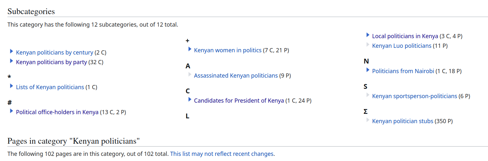
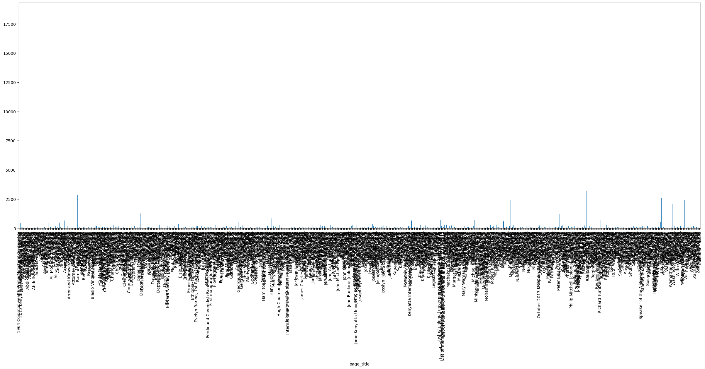
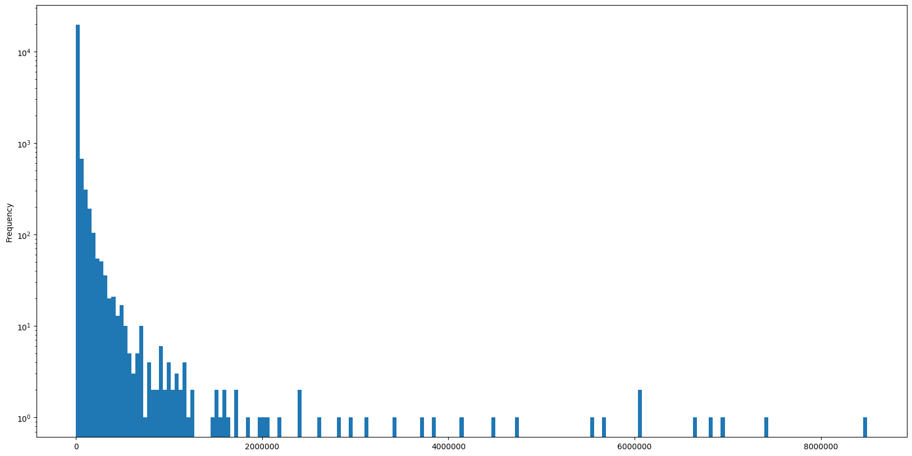
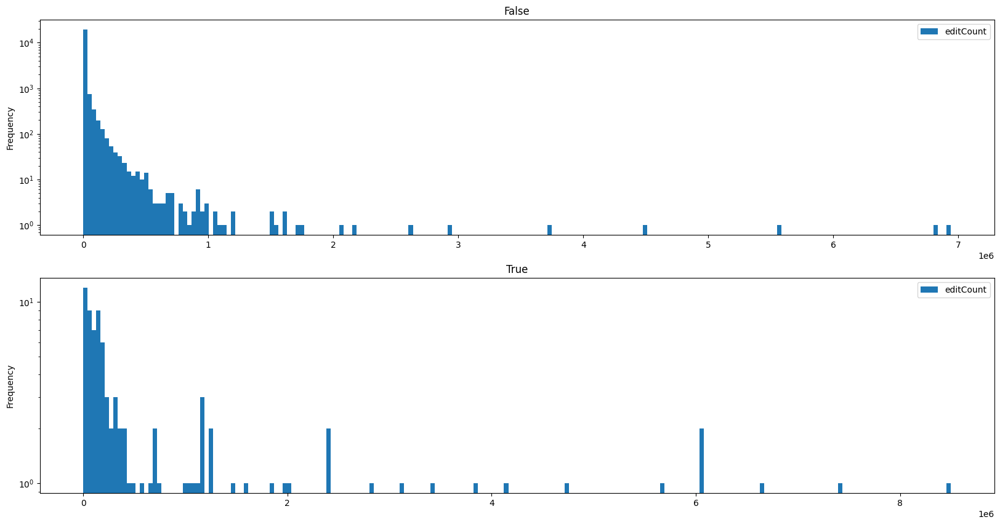
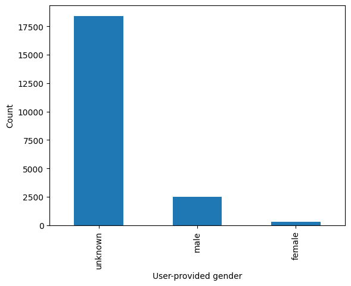
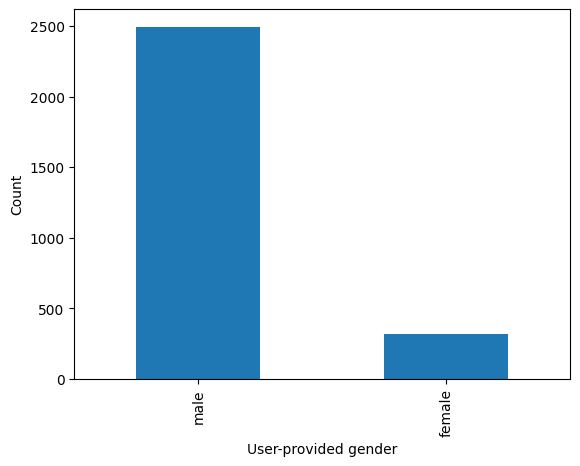

!cat user-config.pyfamily = 'wikipedia'
mylang = 'en'
usernames['wikipedia']['en'] = 'Gedankenstuecke'
password_file = NoneWikipedia, and virtually all other Wiki projects that are run under the umbrella of the Wikimedia Foundation, are using an open-source software called MediaWiki. It is also used outside the Wikimedia universe, in a wide range of settings. For example, researchers are aggregating information about biochemical pathways in the WikiPathways project, German-speaking patients with cluster headaches use it for creating their own knowledge base, and in the Personal Science Wiki people are sharing their n-of-1 citizen science efforts.
To facilitate the programmatic and automatic access to the pages that people create, MediaWiki (and the Wikimedia Foundation) offer different APIs that can be used to access data and edit objects in Wikipedia and its many sister projects.
Namely, there are three different API classes with different focuses on use cases, two of which based are on the REST style:
This custom API that is particular to the Wikimedia projects is designed for delivering high-throughput access to the content and metadata of Wikimedia projects in different, machine-readable formats. As a result, it offers a very narrow and highly optimized access to ‘live’ pages and content.
This focus makes it less relevant for research, where we might want to understand longitudinal changes in how articles have evolved.
The standard REST API of MediaWiki is present in all MediaWiki installations and can be used to get data in JSON or HTML from them. Similar to the Wikimedia-specific API, this is mostly useful for accessing current data through simple API endpoints that return fast responses.
For those reasons, depending on the research question, it might be of limited utility.
The Action API is the most powerful API that MediaWiki offers. Beyond accessing a wide range of data, it can even be used to submit and edit data. For this reason, it is also at the heart of the large service bot ecosystem of Wikipedia and its related projects. Run by Wikipedia contributors, these bots help detect wrongly formatted citations, replace broken links with still accessible archived versions, or fix common language issues.
It also offers the most possibilities to access data from Wikipedia for research purposes, as it provides the detailed edit histories of pages, allows detailed searches across pages and users, and also provides access to public user details, like a user’s editing history, gender (if provided) and other details.
We will focus on the Action API in the following materials.
The Action API can be used through any programming language by sending correctly formatted HTTP requests to it, but as the API is very feature-rich, this quickly becomes quite complex.
Luckily, the Wikimedia Foundation maintains a Python library called Pywikibot that can be used interact with the various endpoints the API offers and also wraps the responses into objects that are easier to work with. Importantly, it also ensures that we honor the rate limits of the API, to ensure we don’t overwhelm the server endpoints.
The library can be installed through pip from the commandline:
pip install pywikibotAfter the installation, we also need to create a user config, in which we need to add our username that we use to identify us as the user of the API. To create the file you can run the following from your terminal:
pwb generate_user_filesIt creates a small user-config.py file in which we add the configuration details. This file should be located in the same folder from which you will run your Python scripts.
You can now start a Jupyter notebook and start interacting with the API.
First, to confirm that the config is found in the notebook, we run the following.
family = 'wikipedia'
mylang = 'en'
usernames['wikipedia']['en'] = 'Gedankenstuecke'
password_file = NoneWe see the username details, here for the English language-version of Wikipedia.
Now we can actually go ahead with loading the libary, confirming once more that the username was correctly set, and do our first query of Wikipedia through the library.
For that, we create a site object, that tells pywikibot which Wikimedia project we want to interact with, by giving the same 2-letter acronym of the language, and the project itself.
We can then use the site object to query through the pywikibot, for example for the page on computational social sciences:
import pywikibot
print("Config: {}\n".format(
pywikibot.config.usernames)
)
site = pywikibot.Site('en', 'wikipedia') # select the wikimedia project we want to interact with
page = pywikibot.Page(site, "Computational social science") # give name of page we want to use
print("Title: {}\n".format(
page.title()
))
print("Start of article:\n\n{}…\n".format(
page.text[:1000]
))Config: defaultdict(<class 'dict'>, {'wikipedia': {'en': 'Gedankenstuecke'}, 'commons': {}})
Title: Computational social science
Start of article:
{{Short description|Academic sub-disciplines}}
{{broader|Quantitative social research}}
'''Computational social science''' is an interdisciplinary academic sub-field concerned with computational approaches to the [[social science]]s.
This means that computers are used to model, simulate, and analyze social phenomena.
It has been applied in areas such as [[computational economics]], [[computational sociology]], computational media analysis, [[cliodynamics]], [[culturomics]], [[nonprofit studies]].<ref>{{Cite journal |last1=Ma |first1=Ji |last2=Ebeid |first2=Islam Akef |last3=de Wit |first3=Arjen |last4=Xu |first4=Meiying |last5=Yang |first5=Yongzheng |last6=Bekkers |first6=René |last7=Wiepking |first7=Pamala |date=February 2023 |title=Computational Social Science for Nonprofit Studies: Developing a Toolbox and Knowledge Base for the Field |journal=Voluntas |language=en |volume=34 |issue=1 |pages=52–63 |doi=10.1007/s11266-021-00414-x |issn=0957-8765|doi-access=free |hdl=1805/31787 |hdl…
We now got the page on Computational social science in the page object and can access information from it, e.g. using a function like page.title() or accessing data like page.text above.
To see the full list of methods and values associated with it, we can see all of them like this (dir(page) in itself would show all methods, including private ones that aren’t supposed to be used directly).
['WIKIBLAME_CODES',
'WIKIWHO_CODES',
'applicable_protections',
'authorship',
'autoFormat',
'backlinks',
'botMayEdit',
'categories',
'change_category',
'clear_cache',
'content_model',
'contributors',
'coordinates',
'create_short_link',
'data_item',
'data_repository',
'defaultsort',
'delete',
'depth',
'embeddedin',
'exists',
'expand_text',
'extlinks',
'extract',
'full_url',
'get',
'getCategoryRedirectTarget',
'getDeletedRevision',
'getOldVersion',
'getRedirectTarget',
'getReferences',
'getVersionHistoryTable',
'get_annotations',
'get_best_claim',
'get_parsed_page',
'get_revision',
'has_content',
'has_deleted_revisions',
'has_permission',
'image_repository',
'imagelinks',
'interwiki',
'isAutoTitle',
'isCategoryRedirect',
'isDisambig',
'isIpEdit',
'isRedirectPage',
'isStaticRedirect',
'isTalkPage',
'is_categorypage',
'is_filepage',
'is_flow_page',
'iterlanglinks',
'itertemplates',
'langlinks',
'lastNonBotUser',
'latest_revision',
'latest_revision_id',
'linkedPages',
'loadDeletedRevisions',
'main_authors',
'markDeletedRevision',
'merge_history',
'move',
'moved_target',
'namespace',
'oldest_revision',
'page_image',
'pageid',
'permalink',
'preloadText',
'properties',
'protect',
'protection',
'purge',
'put',
'raw_extracted_templates',
'redirects',
'revision_count',
'revisions',
'rollback',
'save',
'section',
'set_redirect_target',
'site',
'templates',
'templatesWithParams',
'text',
'title',
'toggleTalkPage',
'touch',
'undelete',
'userName',
'version',
'watch']There is a couple of interesting methods we will look at more closely: authorship, contributors, revisions, and categories.
To check how authorship for the current, i.e. latest version of the page distributes across different contributors, we can use the authorship method. Each tupel of the form (1234, 50.0) gives the authorship in character count (1234) and percentage of the article (50.0):
{'MattiNelimarkka': (3616, 23.0),
'Hoyerdan': (3144, 20.0),
'~2025-34400-27': (1257, 8.0),
'46.233.116.47': (1100, 7.0),
'2605:E000:1521:DB:B1CE:3E73:4742:6DD8': (786, 5.0)}We can see that both registered accounts (MattiMelimarkka) as well as anonymous contributors have made edits. In the past, anonymous contributions were saved under the IP address from which edits were made (e.g. 2605:E000:1521:DB:B1CE:3E73:4742:6DD8 or 46.233.116.47), while today temporary user names are assigned (e.g. ~2025-34400-27).
Instead of just looking at the latest version, we can also get the list of all people who ever contributed and their number of edits, using the contributors method, which will give us a tuple containing the username and the number of edits:
['SchlurcherBot',
'Monkbot',
'OAbot',
'~2025-34400-27',
'Folkezoft',
'David Delony',
'Allforrous',
'Sythoz',
'LucasBrown',
'Citation bot',
'Me, Myself, and I are Here',
'Dicklyon',
'MattiNelimarkka',
'JCW-CleanerBot',
'106.185.147.172',
'WikiCleanerBot',
'ContinueWithCaution',
'Konila21',
'Ira Leviton',
'72.182.36.82',
'Leosonh',
'Jarble',
'Liz',
'MrOllie',
'Xxpaulm',
'Fgnievinski',
'WheezePuppet',
'InternetArchiveBot',
'129.170.195.199',
'Izno',
'103.106.200.56',
'2A01:C50E:2121:0:449F:4A20:B919:4EC2',
'BHGbot',
'Kvng',
'Marnie Hawes',
'45.243.222.143',
'Fadesga',
'IznoRepeat',
'Christianssand',
'217.16.13.130',
'Smasongarrison',
'GünniX',
'Jeffwinchell',
'193.227.11.122',
'Deeahbz',
'KolbertBot',
'Askedonty',
'197.48.29.120',
'Fixuture',
'Rjwilmsi',
'Melcous',
'Bigdata',
'67.212.234.180',
'HelpUsStopSpam',
'Vonbergh',
'Gilliam',
'193.227.11.124',
'Jauerback',
'Alannanoellelaz',
'BG19bot',
'94.174.197.67',
'46.233.116.47',
'Oxf0',
'Pleasantville',
'Pturchin',
'Hoyerdan',
'Mwatson10',
'2605:E000:1521:DB:B1CE:3E73:4742:6DD8',
'SoSivr',
'136.181.195.29',
'De728631',
'Alvin Seville',
'2.85.160.139',
'Bearcat',
'Mamalbahador35',
'CyberXRef',
'Mr RD',
'Malcolma',
'DaveDixon']With this, we now also see some of the service bots that identify as such in their name already, like the WikiCleanerBot or the InternetArchiveBot.
If we want to understand the actual editing history of the page, we can get a list of all revisions, which allows us to see how the page evolved over time.
Note: We’ll just look at the 10 most recent edits to keep the notebook a bit cleaner, but in principle you can see all edits:
This page has 135 revisions
SchlurcherBot edited the article on 2026-02-12T21:46:58Z with this edit comment:
Bot: http → https
---
Monkbot edited the article on 2025-11-27T20:44:07Z with this edit comment:
/* Definitions */ [[User:Monkbot/task 21: Replace page(s) with article-number|Monkbot/task 21: Replace page(s) with article-number]];
---
OAbot edited the article on 2025-11-24T07:09:33Z with this edit comment:
[[Wikipedia:OABOT|Open access bot]]: pmc updated in citation with #oabot.
---
~2025-34400-27 edited the article on 2025-11-18T00:06:45Z with this edit comment:
Added Gilardi and Bermejo as benchmarks against humans
---
Monkbot edited the article on 2025-09-30T07:15:29Z with this edit comment:
/* Definitions */ [[User:Monkbot/task 21: Replace page(s) with article-number|Monkbot/task 21: Replace page(s) with article-number]];
---
Folkezoft edited the article on 2025-08-13T03:00:35Z with this edit comment:
/* Definitions */ Tag [[Wikipedia:Bare URLs|Bare URLs]] using [[Wikipedia:AutoWikiBrowser|AWB]]
---
David Delony edited the article on 2025-04-21T00:43:12Z with this edit comment:
/* See also */ Added link to computational statistics article.
---
Allforrous edited the article on 2025-02-27T22:44:19Z with this edit comment:
/* External links */ Commonscat template.
---
Sythoz edited the article on 2024-12-11T18:29:28Z with this edit comment:
removed too special database history link, added "social physics" to the "See also"
---
LucasBrown edited the article on 2024-05-08T15:01:44Z with this edit comment:
Adding local [[Wikipedia:Short description|short description]]: "Academic sub-disciplines", overriding Wikidata description "academic sub-disciplines concerned with computational approaches to the social sciences"
---
Citation bot edited the article on 2024-04-04T11:56:42Z with this edit comment:
Altered journal. Add: bibcode, title, authors 1-1. Removed URL that duplicated identifier. Changed bare reference to CS1/2. Removed parameters. Some additions/deletions were parameter name changes. | [[:en:WP:UCB|Use this bot]]. [[:en:WP:DBUG|Report bugs]]. | Suggested by Abductive | [[Category:Wikipedia articles in need of updating from March 2024]] | #UCB_Category 101/720
---By default, the revisions that are returned do not include the text of the previous revisions, but if we pass content=True in the method call, those will be returned too:
{{Short description|Academic sub-disciplines}}
{{broader|Quantitative social research}}
'''Computational social science''' is an interdisciplinary academic sub-field concerned with computational approaches to the [[social science]]s.
This means that computers are used to model, simulate, and analyze social phenomena.
It has been applied in areas such as [[computational economics]], [[computational sociology]], computational media analysis, [[cliodynamics]], [[culturomics]], [[nonprofit studiesIn Wikipedia, virtually all articles are in one to many different categories. We can explore which category a page belongs to through the page.categories method:
[[en:Category:All Wikipedia articles in need of updating]]
[[en:Category:All articles with bare URLs for citations]]
[[en:Category:Articles with bare URLs for citations from August 2025]]
[[en:Category:Articles with short description]]
[[en:Category:Commons category link is defined as the pagename]]
[[en:Category:Computational social science]]
[[en:Category:Short description is different from Wikidata]]
[[en:Category:Webarchive template wayback links]]
[[en:Category:Wikipedia articles in need of updating from March 2024]]Above, we have seen how we can access pages in Wikipedia and also get some details about how edited that given page. The API also offers method to dig a bit into who those contributors are and what edits they made.
To access details about a single user, we can use pywikibot.User and then look at the methods that are accessible:
['WIKIBLAME_CODES',
'WIKIWHO_CODES',
'applicable_protections',
'authorship',
'autoFormat',
'backlinks',
'block',
'botMayEdit',
'categories',
'change_category',
'clear_cache',
'content_model',
'contributions',
'contributors',
'coordinates',
'create_short_link',
'data_item',
'data_repository',
'defaultsort',
'delete',
'deleted_contributions',
'depth',
'editCount',
'embeddedin',
'exists',
'expand_text',
'extlinks',
'extract',
'first_edit',
'full_url',
'gender',
'get',
'getCategoryRedirectTarget',
'getDeletedRevision',
'getOldVersion',
'getRedirectTarget',
'getReferences',
'getUserPage',
'getUserTalkPage',
'getVersionHistoryTable',
'get_annotations',
'get_best_claim',
'get_block_info',
'get_parsed_page',
'get_revision',
'getprops',
'groups',
'has_content',
'has_deleted_revisions',
'has_permission',
'image_repository',
'imagelinks',
'interwiki',
'isAnonymous',
'isAutoTitle',
'isCategoryRedirect',
'isDisambig',
'isEmailable',
'isIpEdit',
'isRedirectPage',
'isRegistered',
'isStaticRedirect',
'isTalkPage',
'is_CIDR',
'is_blocked',
'is_categorypage',
'is_filepage',
'is_flow_page',
'is_locked',
'is_partial_blocked',
'is_thankable',
'iterlanglinks',
'itertemplates',
'langlinks',
'lastNonBotUser',
'last_activity',
'last_edit',
'last_event',
'latest_revision',
'latest_revision_id',
'linkedPages',
'loadDeletedRevisions',
'logevents',
'main_authors',
'markDeletedRevision',
'merge_history',
'move',
'moved_target',
'namespace',
'oldest_revision',
'page_image',
'pageid',
'permalink',
'preloadText',
'properties',
'protect',
'protection',
'purge',
'put',
'raw_extracted_templates',
'redirects',
'registration',
'renamed_target',
'revision_count',
'revisions',
'rights',
'rollback',
'save',
'section',
'send_email',
'set_redirect_target',
'site',
'templates',
'templatesWithParams',
'text',
'title',
'toggleTalkPage',
'touch',
'unblock',
'undelete',
'uploadedImages',
'userName',
'username',
'version',
'watch']Some interesting bits for users are the editCount, if they gave their gender, if they are currently blocked from editing, and also what contributions they made. Let’s explore those:
user gave gender as unknown
user is blocked? False
user made 149 edits
user contributions:
(Page('Sierras de Córdoba'), 1352554752, Timestamp(2026, 5, 4, 22, 8, 44), 'fix name of cerro mogote')
(Page('Sierras de Córdoba'), 1352554625, Timestamp(2026, 5, 4, 22, 7, 29), 'add details about los gigantes as natural reserve and tourism spot')
(Page('Los Gigantes'), 1352553589, Timestamp(2026, 5, 4, 21, 57, 18), 'add disambiguation option')
(Page('Draft:Stuart Vines'), 1351709685, Timestamp(2026, 4, 29, 17, 26, 26), 'fix name spelling in infobox')
(Page('Draft:Stuart Vines'), 1351703667, Timestamp(2026, 4, 29, 16, 36, 38), 'Submitting using [[WP:AFCSW|AfC-submit-wizard]]')
(Page('Draft talk:Stuart Vines'), 1351703585, Timestamp(2026, 4, 29, 16, 35, 39), 'Adding WikiProject tags ([[MediaWiki:AFC-add-project-tags.js|assisted]])')
(Page('Draft:Stuart Vines'), 1351703472, Timestamp(2026, 4, 29, 16, 34, 49), '-- Draft creation using the [[WP:Article wizard]] --')
(Page('Tupungato'), 1351597508, Timestamp(2026, 4, 29, 0, 10, 30), 'add detail to first ascent')
(Page('Tupungato'), 1351586099, Timestamp(2026, 4, 28, 22, 31, 2), "add eastern ascent by Viero and Rabal, their death and recovery of Viero's backpack incl. proof of ascent")
(Page('Talk:Darren Beattie'), 1350906013, Timestamp(2026, 4, 24, 19, 15, 45), '/* Involvement in policy for visa restrictions against noncitizen researchers, fact-checkers, and trust/safety workers */ new section')
(Page('UK Biobank'), 1350766688, Timestamp(2026, 4, 23, 22, 15), 'add coverage about uk biobank data for sale on alibaba')We have already seen that pages can be in different categories that group pages that belong together. We can also use categories as a starting point to get a collection of related pages. To do that, we use the pywikibot.Category method, using the Kenyan politicians category as a starting point:
site = pywikibot.Site('en', 'wikipedia') # select the wikimedia project we want to interact with
politician_pages = [] # to store page names and handles after iterating over category
category = pywikibot.Category(site, "Kenyan politicians") # select category
for i in category.articles():
politician_pages.append(i)
print("There are {} pages in the 'Kenyan politicians' category".format(len(politician_pages)))There are 102 pages in the 'Kenyan politicians' categoryBy iterating over the category, we find 102 pages that are part of it. A good starting point, but in reality, the English language edition of Wikipedia has more pages about Kenyan politicians and who aren’t listed in this category, due to how sub-categories in Wikipedia work.
If we go to the Category on Wikipedia, we see 12 sub-categories for e.g. Kenyan politicians by party, stubs (new/short articles) and more.

Pages in these sub-categories won’t be listed as part of the higher-level category by default. But we can recurse through those lists to ensure that we also get those pages in the subcategories:
There are 1039 pages in the 'Kenyan politicians' categoryThis now gives us a substantially larger number of pages about Kenyan politicians to work with.
Now that we have seen the different ways that we can access this data, let’s start to aggregate and visually explore this data a bit.
Ultimately, we would like to have a large DataFrame or table, that contains the full edit history for all the pages in our category of interest.
But, for a start, let’s demonstrate the process by using a single page of the category for demonstration purposes - and then plot the contributions per user to this article – as measured by the number of submitted revisions and the total of added/removed characters as well.
We then:
import pandas as pd # load pandas to get Dataframes and all related methods
p = politician_pages[2] # pick an article
# get all revisions for the article, including the actual article
df = pd.DataFrame(p.revisions(content=True))
# add title, which is missing from revisions, as new column `page_title`
df['page_title'] = p.title()
# calculate size difference between revisions using current/previous revision
df['size_difference'] = df['size'] - df['size'].shift(periods=-1, fill_value=0)
df.head(5)| revid | parentid | user | temp | userid | timestamp | size | sha1 | roles | slots | ... | parsedcomment | tags | anon | minor | userhidden | commenthidden | text | contentmodel | page_title | size_difference | |
|---|---|---|---|---|---|---|---|---|---|---|---|---|---|---|---|---|---|---|---|---|---|
| 0 | 1353017535 | 1352955026 | ~2026-27873-85 | 53666482 | 2026-05-07 17:27:58 | 11702 | 54f895c341ba5e02ffaee873e5003946a7571ada | [main] | {'main': {'contentmodel': 'wikitext', 'content... | ... | <span class="autocomment"><a href="/wiki/Rosly... | [mobile edit, mobile web edit] | False | False | False | False | {{Short description|Kenyan politician (born 19... | wikitext | Roslyne Akombe | -8 | |
| 1 | 1352955026 | 1345291761 | ~2026-27566-80 | 53657954 | 2026-05-07 06:56:46 | 11710 | e6578bd9c7ae21879052ce70ed519d8c047ced07 | [main] | {'main': {'contentmodel': 'wikitext', 'content... | ... | [wikieditor] | False | False | False | False | {{Short description|Kenyan politician (born 19... | wikitext | Roslyne Akombe | 16 | ||
| 2 | 1345291761 | 1342238182 | LionmerterTHE | NaN | 49865477 | 2026-03-25 10:34:29 | 11694 | 98f8589ccba62702aa5d4b4611a4a8c3b0caea6a | [main] | {'main': {'contentmodel': 'wikitext', 'content... | ... | <span class="autocomment"><a href="/wiki/Rosly... | [AWB] | False | True | False | False | {{Short description|Kenyan politician (born 19... | wikitext | Roslyne Akombe | -1 |
| 3 | 1342238182 | 1327823244 | Ser Amantio di Nicolao | NaN | 753665 | 2026-03-07 21:29:55 | 11695 | 8631fa0b036c31c21567e51cac3cb44a82b3ecb6 | [main] | {'main': {'contentmodel': 'wikitext', 'content... | ... | <span class="autocomment"><a href="/wiki/Rosly... | [AWB] | False | False | False | False | {{Short description|Kenyan politician (born 19... | wikitext | Roslyne Akombe | -25 |
| 4 | 1327823244 | 1327823189 | Eleosyne | NaN | 49749298 | 2025-12-16 08:04:46 | 11720 | b1c7e676b7268b23f046cd7e7b78f14109d50156 | [main] | {'main': {'contentmodel': 'wikitext', 'content... | ... | Added a category | [visualeditor] | False | False | False | False | {{Short description|Kenyan politician (born 19... | wikitext | Roslyne Akombe | 30 |
5 rows × 21 columns
For this chosen page, let’s now visualize the number of edits made by the different editors as measured by saved revisions:
The number of revisions of course does not tell us everything. Some editors might make big edits in a single change, while others might break their edits in many small changes. And some might mostly add new information, while others delete outdated/wrong details. So let’s look at the ‘article szie changes’ per editor:
Note: A user could show up as “zero” edits, if they added and removed text of the same volume
DataFrame for all pagesNow that we better understand the type of data we will get, and got a working code to create a DataFrame over all revisions of a single page, let’s zoom one more step out - and create it for all pages in our category.
Warning: Actually executing this code will likely take a while given the API rate limits that MediaWiki enforces and that Pywikibot will respect.
# create empty dataframe to hold all data eventually
df_politicians = pd.DataFrame()
for p in politician_pages:
# create dataframe that holds the revisions for a given page
# also add the title & size diff as above
df = pd.DataFrame(p.revisions(content=True))
df['page_title'] = p.title()
df['size_difference'] = df['size'] - df['size'].shift(periods=-1, fill_value=0)
# if this is not first iteration, concatenate existing data & new page
if not df_politicians.empty:
df_politicians = pd.concat([df_politicians, df])
# otherwise just create aggregate DF
else:
df_politicians = df
# Let's save our data in a CSV file, especially given how long it can take to run this
df_politicians.to_csv('pages_category_kenyian_politicians.csv')
df_politicians.head()| revid | parentid | minor | user | userid | timestamp | size | sha1 | roles | slots | ... | anon | userhidden | commenthidden | text | contentmodel | page_title | size_difference | temp | sha1hidden | suppressed | |
|---|---|---|---|---|---|---|---|---|---|---|---|---|---|---|---|---|---|---|---|---|---|
| 0 | 1285549690 | 1284245409 | True | Almaddy2022 | 44620763.0 | 2025-04-14 10:08:57 | 4224 | dac6097a46b4f8553538a7cd72f8e21144a98f25 | [main] | {'main': {'contentmodel': 'wikitext', 'content... | ... | False | False | False | {{short description|Kenyan writer and politica... | wikitext | Abdilatif Abdalla | 8 | NaN | NaN | NaN |
| 1 | 1284245409 | 1241910337 | False | Almaddy2022 | 44620763.0 | 2025-04-06 12:24:59 | 4216 | 9702f3020b6af39bfe3d4c665ddff5caa65b9b51 | [main] | {'main': {'contentmodel': 'wikitext', 'content... | ... | False | False | False | {{short description|Kenyan writer and politica... | wikitext | Abdilatif Abdalla | 93 | NaN | NaN | NaN |
| 2 | 1241910337 | 1215802812 | True | Inter&anthro | 18180119.0 | 2024-08-23 20:59:25 | 4123 | 3855f560b43074cb4ddf410042636935866d6e54 | [main] | {'main': {'contentmodel': 'wikitext', 'content... | ... | False | False | False | {{short description|Kenyan writer and politica... | wikitext | Abdilatif Abdalla | 38 | NaN | NaN | NaN |
| 3 | 1215802812 | 1215802775 | False | IOHANNVSVERVS | 24759391.0 | 2024-03-27 06:08:59 | 4085 | edde49d1d4e95abcdd491f4e142fdd2f3fed23eb | [main] | {'main': {'contentmodel': 'wikitext', 'content... | ... | False | False | False | {{short description|Kenyan writer and politica... | wikitext | Abdilatif Abdalla | -1 | NaN | NaN | NaN |
| 4 | 1215802775 | 1215802684 | False | IOHANNVSVERVS | 24759391.0 | 2024-03-27 06:08:39 | 4086 | 6e4050681632db2525ccc51e26e2cf99ab2a9a42 | [main] | {'main': {'contentmodel': 'wikitext', 'content... | ... | False | False | False | {{short description|Kenyan writer and politica... | wikitext | Abdilatif Abdalla | 13 | NaN | NaN | NaN |
5 rows × 23 columns
Now we can group the number of revisions per page title and put it all in one plot

Seems like there’s one article with a huge number of edits compared to all others, plus some more that stand out. Let’s try to find those:
| revid | parentid | minor | user | userid | timestamp | size | sha1 | roles | slots | ... | tags | anon | userhidden | commenthidden | text | contentmodel | size_difference | temp | sha1hidden | suppressed | |
|---|---|---|---|---|---|---|---|---|---|---|---|---|---|---|---|---|---|---|---|---|---|
| page_title | |||||||||||||||||||||
| Elizabeth II | 18393 | 18393 | 18393 | 18393 | 18393 | 18393 | 18393 | 18390 | 18393 | 18393 | ... | 18393 | 18393 | 18393 | 18393 | 18390 | 18393 | 18393 | 0 | 3 | 0 |
| Jomo Kenyatta | 3268 | 3268 | 3268 | 3268 | 3268 | 3268 | 3268 | 3266 | 3268 | 3268 | ... | 3268 | 3268 | 3268 | 3268 | 3266 | 3268 | 3268 | 0 | 2 | 0 |
| Raila Odinga | 3157 | 3157 | 3157 | 3157 | 3157 | 3157 | 3157 | 3141 | 3157 | 3157 | ... | 3157 | 3157 | 3157 | 3157 | 3141 | 3157 | 3157 | 0 | 16 | 0 |
| Barack Obama Sr. | 2876 | 2876 | 2876 | 2876 | 2867 | 2876 | 2876 | 2840 | 2876 | 2876 | ... | 2876 | 2876 | 2876 | 2876 | 2840 | 2876 | 2876 | 0 | 36 | 0 |
| Uhuru Kenyatta | 2554 | 2554 | 2554 | 2554 | 2554 | 2554 | 2554 | 2544 | 2554 | 2554 | ... | 2554 | 2554 | 2554 | 2554 | 2544 | 2554 | 2554 | 19 | 10 | 1 |
| Mwai Kibaki | 2436 | 2436 | 2436 | 2436 | 2436 | 2436 | 2436 | 2436 | 2436 | 2436 | ... | 2436 | 2436 | 2436 | 2436 | 2436 | 2436 | 2436 | 5 | 0 | 0 |
| William Ruto | 2420 | 2420 | 2420 | 2420 | 2420 | 2420 | 2420 | 2414 | 2420 | 2420 | ... | 2420 | 2420 | 2420 | 2420 | 2414 | 2420 | 2420 | 9 | 6 | 0 |
| Wangarĩ Maathai | 2088 | 2088 | 2088 | 2088 | 2088 | 2088 | 2088 | 2080 | 2088 | 2088 | ... | 2088 | 2088 | 2088 | 2088 | 2080 | 2088 | 2088 | 5 | 8 | 0 |
| Jomo Kenyatta International Airport | 2072 | 2072 | 2072 | 2072 | 2072 | 2072 | 2072 | 2072 | 2072 | 2072 | ... | 2072 | 2072 | 2072 | 2072 | 2072 | 2072 | 2072 | 4 | 0 | 0 |
9 rows × 22 columns
If we look closely, there seems to be something noteworthy with those search results: Why did the “Elizabeth II” and “Jomo Kenyatta International Airport” make our list of politicians?! Let’s hold that thought for a bit longer, when we’ll explore an alternative way to narrow down our pages of interest.
For now, let’s do a similar approach for saving the details of the editors that have touched those pages that we have identified.
For a start, let’s just save the basic statistics for them, namely their total edit counts, gender (if entered), and whether they are registered users and/or bots.
Bots in Wikimedia are marked by the user group they belong to, so we can use the .groups() method and check if the account is part of it.
Getting all those user details will take a long while, given that it’s > 20.000, so for demonstration purposes, the code below only does it for the first 100 users.
df_users = pd.DataFrame()
count = 0
for user in df_politicians['user'].unique():
user = pywikibot.User(site, user) # get user object to manipulate
groups = user.groups()
if "bot" in groups: # to make it easier to see if user is a bot
bot = True
else:
bot = False
if len(user.first_edit) > 2: # doesn't necessarily exist for some reason
first_edit = user.first_edit[2]
else:
first_edit = None
if len(user.last_edit) > 2: # doesn't necessarily exist for some reason
last_edit = user.last_edit[2]
else:
last_edit = None
df = pd.DataFrame([{
'username' : user.username,
'is_blocked': user.is_blocked(),
'gender': user.gender(),
'is_bot': bot,
'first_edit': first_edit,
'last_edit': last_edit,
'editCount': user.editCount()
}]
)
if not df_users.empty:
df_users = pd.concat([df_users, df])
else:
df_users = df
count += 1
if count > 100:
#pass
# otherwise, this runs for a very long time to actually get all the user data!
break
df_users.head(100)Now, we can look at the editing behaviour of all of those users, across all articles they edited, by starting to make some plots.
Let’s start with a basic histogram over the edit counts. The x-axis will show us the number of edits in bins, the y-axis how many users made that many edits:
That looks not super informative. The reason is that by default the plot command only creates 10 bins for the histogram. Plus, as for most online communities, we see a very strong participation inequality, also known as the 1% rule.
Let’s use a logarithmic scale for the y-axis, create 200 instead of 10 bins and disable the scientific notation on the x-axis:

That already looks more insightful. Es expected, the largest part of our users made compartively few edits, while there’s a few outliers that did a lot of edits.
We can now also split this graph into those users who are bots and those who arent:

We can see that amongst the bots, there are more accounts with very large numbers of edits, as one would expect for automated editing. But: Even among the human editors, there are a few outliers that made between 300,000 and nearly 700,000 edits!
We can now also try to split the graph by the user-provided gender information, after exploring the distribution of responses by users:

We see that the vast majority of users did not specify their gender through the MediaWiki settings. If we focus on the gender breakdown only for the ~3000 users who did specify it, we see that ~15% of users gave their gender as female.

We can now break down the editing history:
We’ve seen how the MediaWiki Actions API can be interfaced with through the pywikibot library to get details about Wikipedia categories, individual pages along with their editing histories and contributors, and about contributors generally.
We have also explored how we can connect all of these to create a simple data set that we can re-use for more in-depth analyses later on.
But, we have also seen that our way of collecting this data maybe is not ideal yet, as our pages that we sourced from the Kenyan politicans page included unexpected pages, such as the Jomo Kenyatta International Airport. In the next bit, we’ll see how we can query Wikidata to find more specific pages, by filtering for the properties of the page subjects (e.g. if they are people or not).